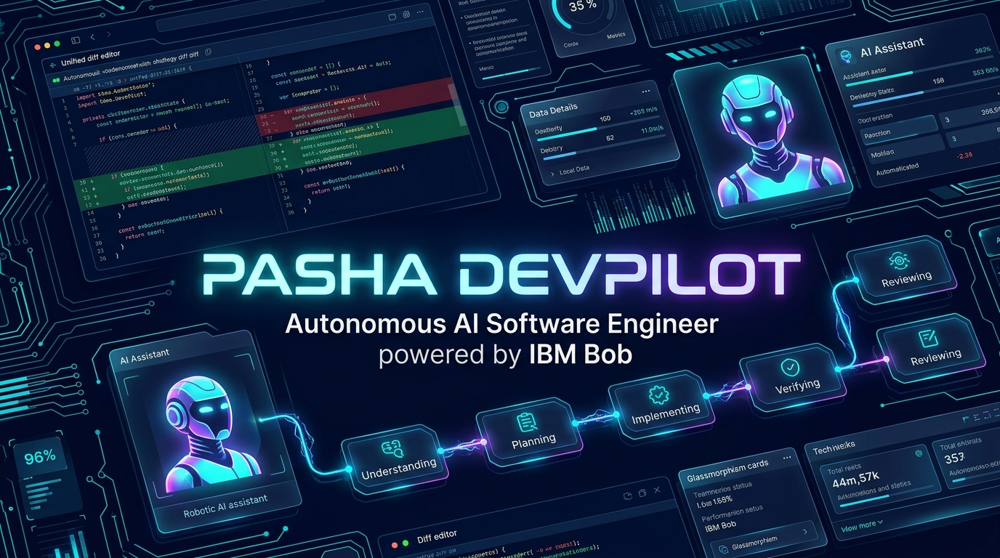

PASHA DEVPILOT
The complete, self-healing SDLC platform powered by IBM Bob. Moving beyond chat assistants into verified, end-to-end repository engineering.

Why AI Chatbots Fail Software Teams
Chat models like ChatGPT generate code, but don't build software.
The Solution: Pasha DevPilot
A production-grade engineering platform with strict human oversight.
7-State Deterministic State Machine
Every task transitions through an audited, verifiable workflow.
IBM Bob: The Primary Intelligence
Deeply integrated via specialized SDLC provider and model routing.
bob-code-plus) across all 7 pipeline states with dynamic fallback routing for zero downtime.ghp_*, sk-*) are cryptographically redacted before logs or UI display.Enterprise-Grade Security Sandbox
Zero unvetted changes, zero unauthorized command execution.
rm, del, shutdown, curl | bash, git push --force. Only approved test runners (pytest, jest, vitest) execute.../) trigger immediate sandbox abort.Real-World Repository Validation
Demonstrated live on pasha804/laughing-octo-eureka.
devpilot/task-0378c47f.The Future of Software Autonomy
Pasha DevPilot is built, verified, and ready for deployment.
🔗 Platform Repo: github.com/pasha804/pasha-devpilot
🔗 Demo Target Repo: github.com/pasha804/laughing-octo-eureka
✨ Ready for Evaluation: Next.js 15 + FastAPI + Monaco Editor + Sandboxed Execution